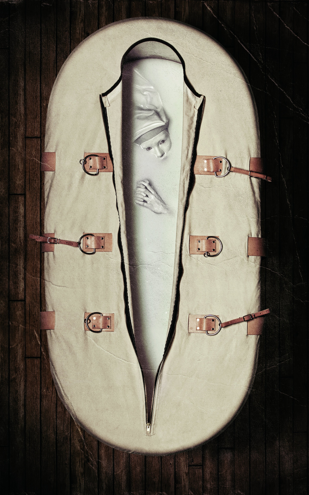
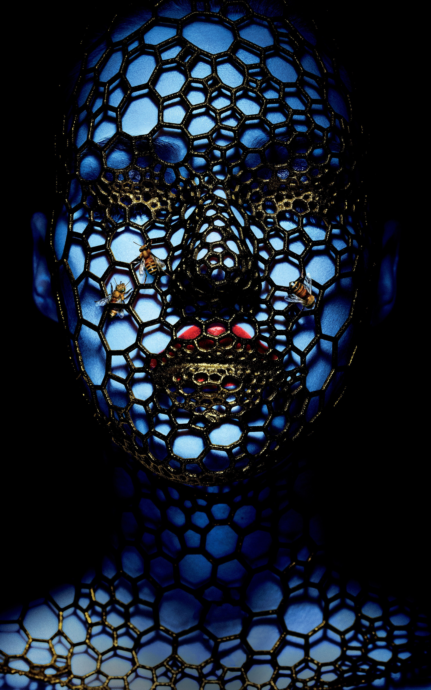
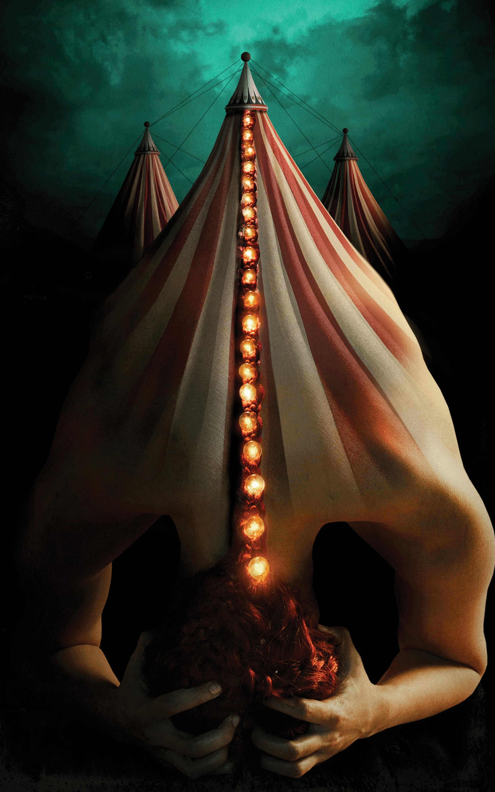
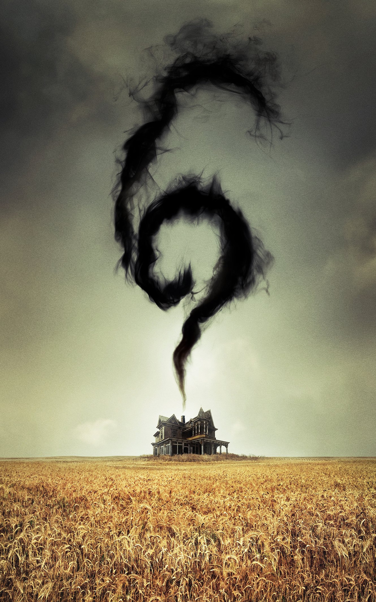
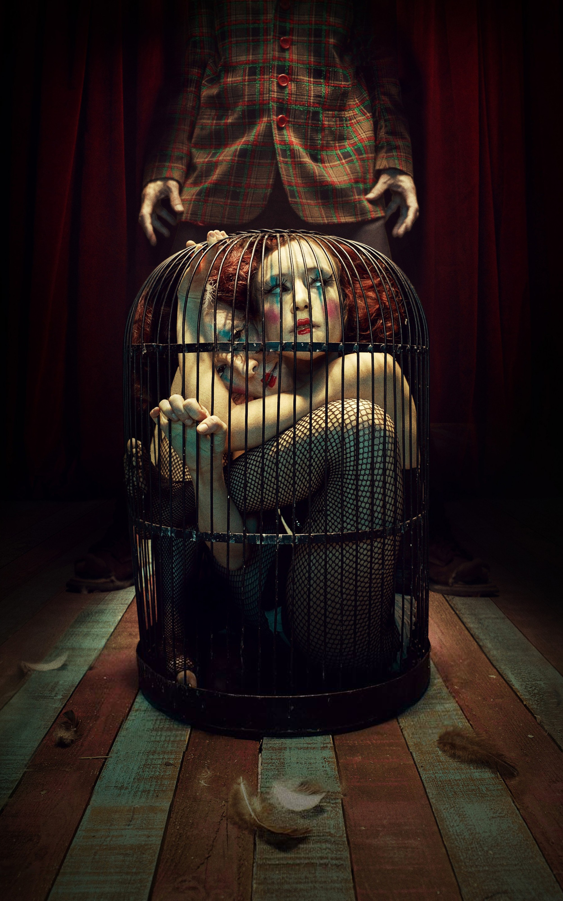
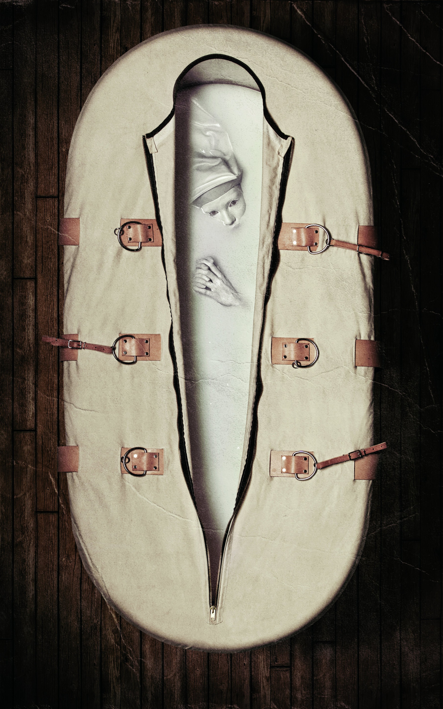
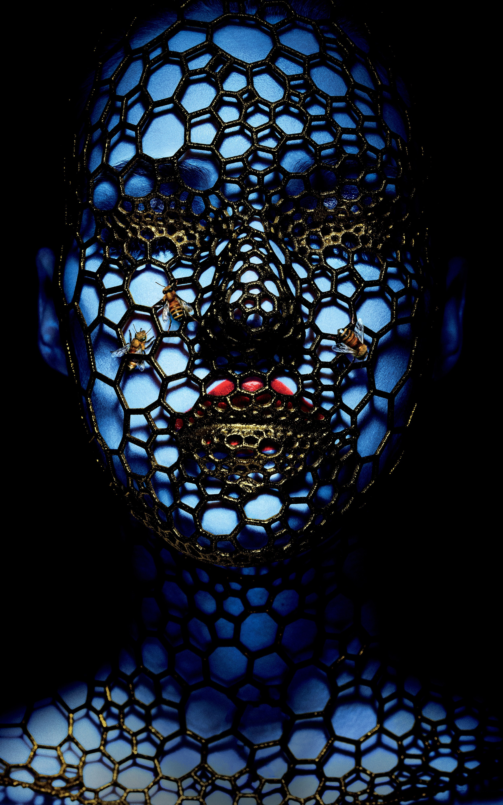
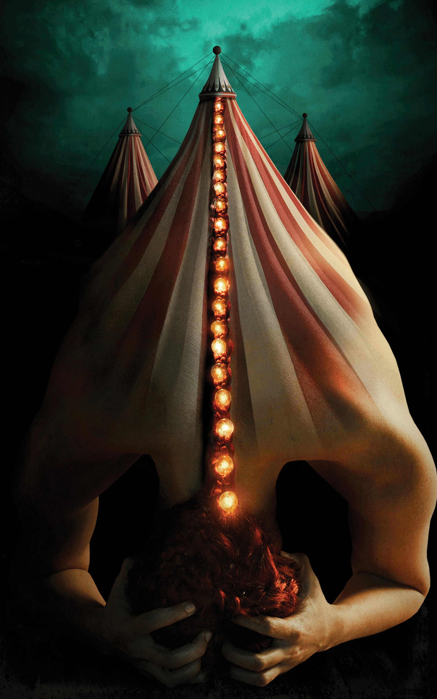
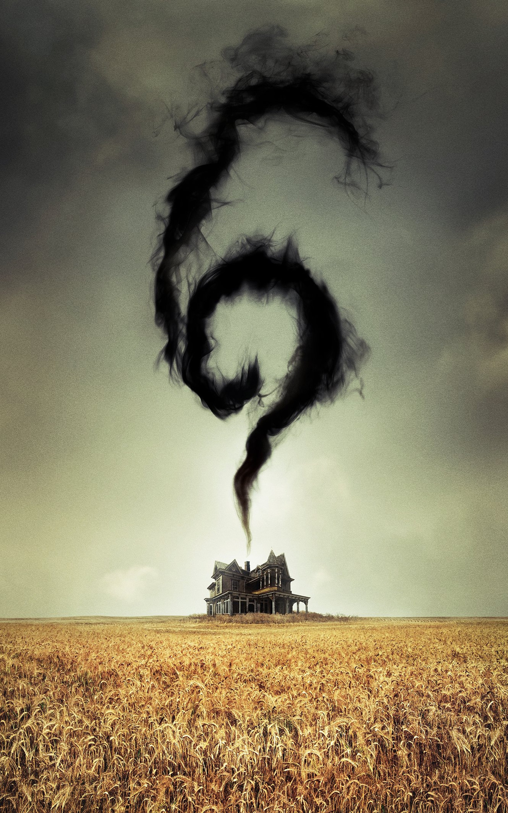
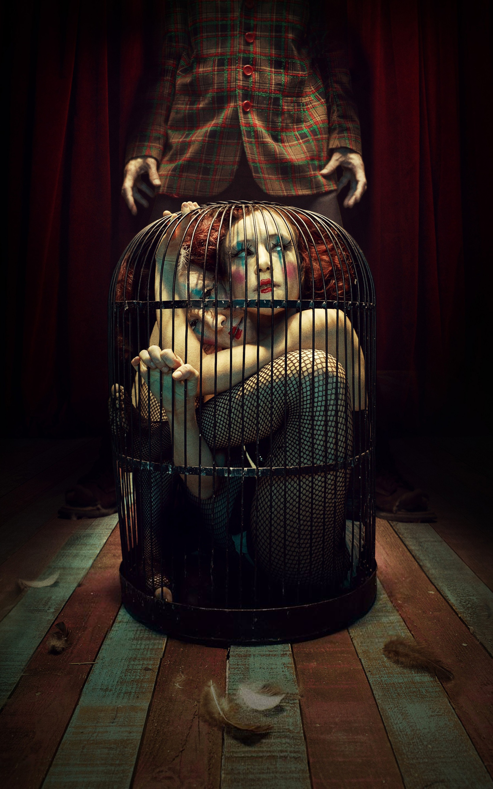

Room service
The season is the long-awaited crossover between Murder House and Coven.
Learn more
This season follows patients, doctors and nuns who take care of the Briarcliff Mental Institution, created to treat and house insane criminals. The guards who run the institution are the rigid Sister Jude, her second in command Sister Mary Eunice and the founder of the institution, Monsignor Timothy Howard.
Learn moreThe story begins in the quiet sleepy village of Jupiter, Florida. The year is 1952. A group of human curiosities has just arrived in the city, coinciding with the strange appearance of a dark entity that savagely threatens the lives of the inhabitants.
The season is the long-awaited crossover between Murder House and Coven.
Learn moreThe year is 1952. A group of human curiosities has just arrived in the city.
Learn moreCentered on the experience lived by the couple Shelby Miller and Matt Miller.
Learn more 









Welcome to the largest textless high-resolution movie wallpapers database on the Internet.
The season takes place in the suburbs of Detroit with Ally Mayfair Richards as the protagonist, a New Yorker traumatized by the attacks of September 11. She has developed three phobias: tripophobia, anxiety by objects or shapes that have holes or cavities; coulrophobia, anxiety by clowns; and hemophobia, an irrational fear of blood.
Learn more